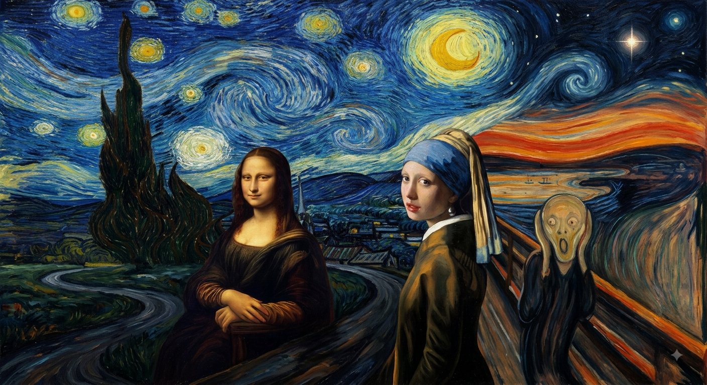

**Texto Alt:** > *"Releitura artística reunindo quatro obras famosas: no centro, a Mona Lisa de Leonardo da Vinci e a Moça com o Brinco de Pérola de Vermeer aparecem lado a lado. À direita, a figura em pânico de O Grito, de Edvard Munch, está sobre uma ponte sob um céu avermelhado. O fundo da cena é composto pelo céu estrelado e turbulento em tons de azul e amarelo da obra A Noite Estrelada, de Vincent van Gogh."*">O que acha de saber mais?
As informações deste site foram pesquisadas exclusivamente com expecialistas responsaveis
Por: Nicilly Franchin